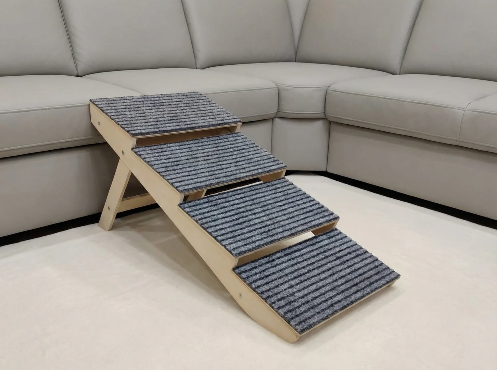
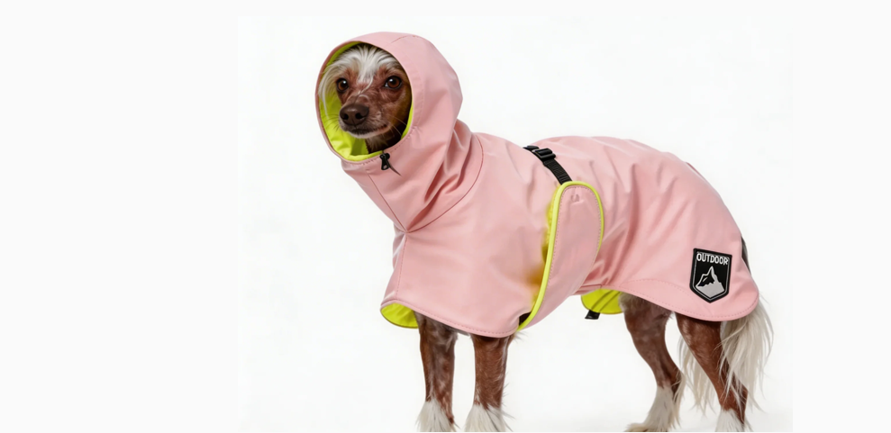
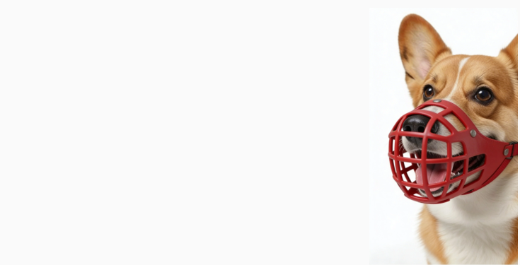

Основы благополучия твоей собаки
Благополучие собаки в повседневной жизни складывается из того, как организованы домашнее пространство и бытовые процедуры, какая амуниция используется на прогулке и насколько понятным и бережным остается взаимодействие с человеком. Важную роль играют и ритуалы: предсказуемая последовательность действий помогают собаке понимать, что будет дальше, а значит делают совместную жизнь спокойнее.

Организация домашнего пространства
При организации домашнего пространства важно учитывать потребности и индивидуальные особенности собаки. Иметь возможность выбора для собаки очень важно: спать где комфортно, что-то изучать, уединиться или, наоборот, иметь возможность провести время с человеком. Очень важен для собаки и социальный сон с человеком.
Скользкий пол, особенно когда собака прыгает с какого-то возвышения, повышают риск травм и развития остеоартрита, поэтому основные места пребывания собаки стоит сделать нескользкими - с помощью ковров или специальных покрытий.
Место для еды
Для щенков, молодых и взрослых здоровых собак миски должны стоять на полу, поскольку именно такое положение физиологично для собак: при нем пищевод распрямляется, а не изгибается, как при кормлении с высокой подставки. При этом у собак с заболеваниями опорно-двигательного аппарата высота миски подбирается иначе, чтобы не усиливать боль при наклоне головы вниз.
Важно следить за чистотой посуды и выбирать безопасные материалы (например, нержавеющая сталь с нескользящим дном), а также предусмотреть нескользящее покрытие под лапами в зоне кормления. Если в доме живет несколько собак, их миски должны стоять на расстоянии друг от друга.

Место для отдыха
Важно, чтобы у собаки было несколько вариантов мест отдыха с разной фактурой и температурой: более мягкие и более жёсткие поверхности, возможность спать на возвышении или охладиться на полу.
Обязательно должно быть уединенное место, где собаке не проводят никаких процедур, где она может расслабиться, где не слышно шума бытовых приборов или пугающих стимулов (звука грозы или салютов) и есть возможность включить успокаивающую музыку.
Для пожилых и собак с заболеваниями опорно-двигательного аппарата особенно значимы ортопедические лежанки с эффектом памяти, которые помогают разгрузить суставы и повышают комфорт отдыха.

Баланс интересов
Идея о том, что правила для собаки не должны меняться - это устаревший принцип. Собаки учатся также, как и мы с вами, на протяжении всей своей жизни и адаптируются к разным условиям, и тоже могут менять и подстраивать своё поведение под изменения среды.


Как правильно снять мерки для анатомичекой шлейки
фотографии


Бытовые процедуры и домашний уход
Бытовые процедуры превращаются не в источник стресса, а в регулярный социальный контакт с собакой через предсказуемые действия и ритуалы, уважение к её сигналам и бережные прикосновения
Что должно быть дома
Собаке важно иметь собственные вещи: миски, игрушки, лежанки с разными фактурами, безопасный пандус к дивану или кровати, средства ухода (лосьон для ушей, шампунь, когтерез, машинка, защита лап, средства от паразитов).

Как проходят процедуры
Обязательный минимум: спокойная пальпация всего тела, осмотр и чистка ушей, глаз, зубов, стрижка когтей, уход за шерстью на лапах (в т.ч. стрижка шерсти между подушечками). Каждую процедуру нужно разделять на маленькие шаги, используя положительное подкрепление: показать инструмент, дать понюхать, прикоснуться, сделать какое-то короткое действие. Эти этапы мы вводим постепенно, если собака испытывает сильный дискомфорт мы не торопим ее и даем время привыкнуть к процедуре. Можно использовать протокол активного согласия, а при прекращении инициативы от собаки процедура заканчивается. Важно звать собаку на процедуры из её безопасного места, использовать слова, которые дадут ей возможность понять что сейчас планируется и после всегда давать ей совместный контакт и поощрить лакомствами.
К ванне собаку приучаем постепенно: отдельно даем привыкнуть к самому помещению, к звуку воды, к душу, затем постепенно знакомим с водой, поверхность ванны должна быть не скользкая. Подкрепляем процесс, лакомствами, игрой и спокойной коммуникацией.
Моем собаку только ветеринарными шампунями, имеющими специальный ph. Груминг в салоне выбирать таким образом, чтобы собака могла менять позу, получать паузы и не оказывалась в фиксации.
Дополнительные полезные вещи
Гамак в машину с фиксацией ремнем безопасности, нюхательный/лизательный коврики, конг, охлаждающий матрас летом, коляска для собаки с проблемами опорнодвигательного аппарата и др.

Анатомически правильная амуниция
Самая анатомически правильная шлейка - Y образная. Анатомическую шлейку можно подобрать под особенности вашей собаки, кому-то подойдут более узкие стропы, кому-то более широкие, активным собакам подойдет шлейка с тремя стропами. Шлейка должна иметь не менее 5 точек регулировки для комфорта вашей собаки. Уделите внимание качеству креплений. Правильно подобранная анатомическая шлейка не испортит опорно‑двигательный аппарат щенка, и для хондродистрофических пород собак - только она безопасный вариант амуниции. Миф о том, что собака на шлейке всегда тянет» связан с тем, что на ошейнике гораздо легче корректировать собаку, но в дальнейшем это скажется не только на здоровье опорно-двигательного аппарата собаки, но и станет источником хронического стресса и только усугубит "нежелательное" поведение. Для комфортной прогулки с собакой добавьте длинный поводок не менее 5 метров, позвольте вашей собаке удовлетворять видотипичные потребости - и вы увидите, насколько комфортной может быть ваша прогулка!
 Анатомически правильная шлейка
Анатомически правильная шлейка
 Не правильная шлейка
Не правильная шлейка
Аверсивная и псевдогуманная амуниция
Данные виды амуниции для собак не только негуманны, но и нерезультативны (импульсный контроль не поможет при выбросе гормонов в момент возбуждения у собаки). Аверсивные средства амуниции: ЭШО, строгий ошейник, удавка. К псевдогуманным (корректирующим) средствам амуниции можно отнести: халти, шлейка с передним кольцом (очень травмоопасны), поводок-перестежка и очень короткие поводки (собака не имеет возможности удовлетворить свои видотипичные потребности на прогулке). Такая амуниция очень травмоопасна и приводит к хроническому стрессу и усилению "нежелательного" поведения. Обувь мы надеваем собаке только если она травмировала конечность и необходимо ее беречь. В остальных случаях - чтобы собака не пачкала лапы, чтобы не было скользко или соприкосновения с реагентами - мы обувь не используем. Это может привести к растяжению связок и даже разрыву мышц. Дополнительным минусом является то, что собака себя в них чувствует очень дискомфортно, усиливать возбуждение собаки на прогулке.
 неправильный намордник
неправильный намордник
Одежда
Самый физиологичный для собаки вариант одежды - это попоны. Они не сковывают движения собаки и не доставляют дискомфорт.

правильная попонаДля cобак с шумофобией создали специальные попоны ThunderShort, которые оказывают очень легкое давление на собаку, что способствует выработке эндорфинов и создает ощущение безопасности у собаки.

правильный намордникЕсли по определенным причинам вашей собаке нужен намордник, то он должен позволять собаке свободно дышать с открытой пастью, высунуть язык, попить воды, быть легким и не натирать. Идеальный вариант - намордник-"корзинка".
Ошейник и рулетка - почему они вредны для вашей собаки
Полезные ритуалы для комфортной жизни с собакой
Ритуалы являются определенной последовательностью действий в определенном контексте, которые делают повседневную предсказуемой для собаки и удобной для человека. Они помогают снизить избыточное возбуждение, превратить потенциально проблемные моменты (выход на прогулку, уход человека из дома, приход гостей, семейный ужин) в спокойные и понятные процессы.
Рассмотрим, например, такую гигиеническую процедуру как стрижка когтей. Чтобы уход за собакой был предсказуемым и безопасным, мы собираем вокруг этой процедуры небольшой ритуал. Он помогает собаке понимать, что сейчас будет, и легче перенести манипуляции.
В ритуал можно включить: определённое место, где будут происходить процедуры; специальный коврик, тихую музыку; фразу, которой вы приглашаете собаку на процедуру; лакомства для снижения стресса; реквизит, с которым собака заранее знакома и который она может обнюхать.
Честность и предсказуемость
Необходимы для того, чтобы собака чувствовала себя в безопасности и доверяла человеку. Часто игнорируется при выполнении гигиенических процедур.
Принцип обратной связи
Мы можем демонстрировать в качестве обратной связи для собаки: жесты (например, стоп сигнал),слова поощрения, которые собака отлично узнает (спасибо/молодец/все хорошо), тактильный контакт, оказание поддержки (отвести в укромное место когда собаке страшно).
Обогащенная среда и игры
Обогащение среды - это добавление стимулов, которые воздействуют на различные органы чувств собаки, расширяют ее опыт, снижают уровень стресса, новизны и вероятность деструктивного поведения, делая жизнь собаки более благополучной.
Начните с нескольких предметов разных фактур, расположенных на расстоянии друг от друга.
Они не должны пугать собаку, она должна иметь возможность обойти предметы, не задев их.
В обогащенную среду можно включить мягкие/резиновые коврики, корзиночки с втулками и пластмассовыми шариками, в которых спрятаны вкусняшки.
Постепенно усложняя задания, можно добавлять негромкие звуки, новые запахи, безопасные для собаки, включать предметы, к которым хотим собаку бережно приучить (например когтерез)
 *сенсорное обогащение
*сенсорное обогащение
 *нюхательные игры
*нюхательные игры
Развивающие игры
Развивающие игры играют очень важную роль в благополучии вашей собаки. Они позволяют собаке легально реализовывать видотипичное поведение, дают ментальную нагрузку и позволяют усилить социальный контакт со своим опекуном через совместную деятельность. Также развиающие игры являются хорошей профилактикой когнитивной дисфункции и очень важны для пожилых собак.
ФОТО
добавить фото с нейропластичностью